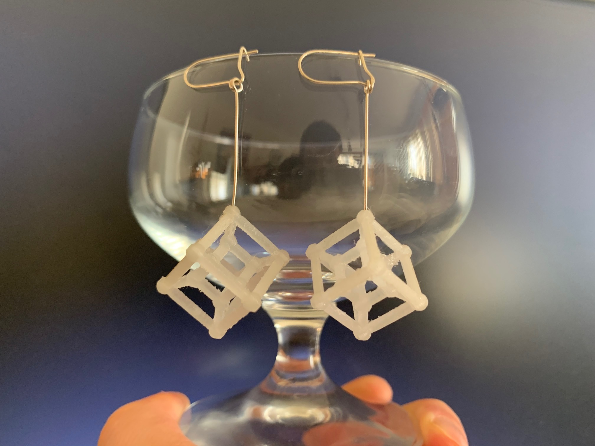

These earrings do not only look good, they combine aesthetics with mathematics. The shape is well-known among mathematicians as being a three-dimensional projection of a four-dimensional cube. Pristine objects like these are always great choices for jewellery. The part is printed with the natural PLA material.
